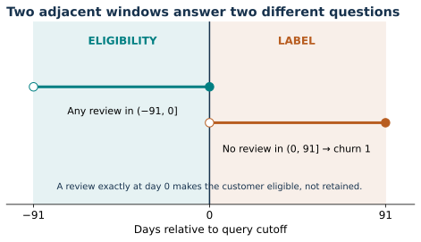
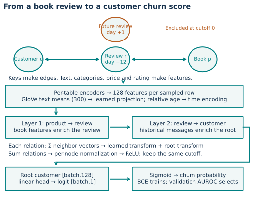
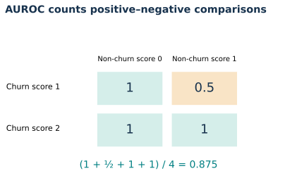

Year 4 · Quarter 2 · Lesson 138
E-commerce: what does Amazon churn actually mean?
Before predicting whether a customer will leave, establish what the database can actually observe.
Your win: defend an Amazon churn prediction from its eligible customer and cutoff, through historical review messages, to a correctly interpreted ranking score.
Student notebook · Executed solution · Reference card · Reproduction protocol
1 · A new domain changes the meaning of the question¶
Lesson 137 showed how to locate a model's errors. It left another question unresolved: does the target measure the real-world outcome we care about? Moving from race results to an online store makes this distinction concrete.
Retrieve first: What two values identify a temporal query? Which split selects a checkpoint? Can an error slice establish its own causal explanation?
Check your retrieval
An entity and a cutoff identify a query. Validation selects checkpoints. A slice describes an association; a controlled intervention is needed to test a causal explanation.A query is a customer ID and a date at which we make a prediction. A target is the outcome observed after that date. RelBench's Amazon task calls its target churn: no recorded product review during the next 91 days. A customer is eligible only if they reviewed a product during the preceding 91 days. The task comes from an Amazon Books review dataset, not a complete purchase ledger. Released task SQL · Dataset construction
In plain terms. The label answers “Will this recent reviewer stop reviewing for a while?” It cannot establish “Will this customer stop buying?”
Source construction also filters out products without parsed prices. This curated Books cohort is not a random sample of all Amazon customers.
That difference changes how we use a prediction. A review reminder and a purchase-retention campaign are different interventions. A high ranking score on review absence does not establish either intervention's effect.
Primary reading: RelBench v1 §4, §5.1, Table 6 and Appendix B. Read the named rel-amazon/user-churn row alongside its task definition before interpreting the score.
2 · Build the question before building the model¶
Let t be the query cutoff and H = 91 days the horizon. The recent window is (t − H, t]. Parentheses mean the endpoint is excluded; a square bracket means it is included. A customer belongs to the task only if at least one review falls inside that recent window. The future window is (t, t + H]. The churn label equals 1 when this future window contains no review, and 0 otherwise.
Worked example. At cutoff day 0, customer A has reviews on days −12 and +91. A is eligible because −12 is in (−91, 0]. A's label is 0 because +91 is in (0, 91]. Customer B has only a review on day −91. B is ineligible; assigning B label 1 would invent a query outside the task population.

Predict before changing the control: with a fixed review on day −12, does moving the next review from day +91 to day +92 change eligibility, the label, or both?
def review_target(review_days,cutoff,horizon=91):
"""Return (eligible, churn); days share an origin. Ineligible has no label."""
days=np.asarray(review_days,dtype=float)
if days.ndim!=1 or not np.isfinite(days).all() or not np.isfinite(cutoff) or not np.isfinite(horizon) or horizon<=0:
raise ValueError('Finite one-dimensional events and positive horizon required')
eligible=bool(np.any((days>cutoff-horizon)&(days<=cutoff)))
future=bool(np.any((days>cutoff)&(days<=cutoff+horizon)))
return eligible,int(not future) if eligible else None
Lab task 1: implement the two windows. Return (False, None) for an ineligible customer. CHECK tests exact endpoints, duplicated events, missing values and a different horizon. A customer outside the population is not a negative training example.
A mature label is one whose entire future window has elapsed. At cutoff t, the model may use earlier features, but the target cannot be finalized until t + H. Never infer a churn label merely because a data extract stopped early. The benchmark supplies fixed temporal task tables; the audit below reconstructs their labels from the downloaded event archive.
Scope check. These timestamps record review events. They do not certify when every field first became available to a production system. Product metadata without a timestamp is particularly important: a valid review cutoff alone does not prove historical metadata availability.
3 · Model architecture: how a book reaches a customer score¶
The database has customer, review and product tables. A primary key uniquely identifies a row. A foreign key points to a row in another table. Each review links one customer and one product. The raw archive has 20,862,040 reviews for reconstructing labels. The released model snapshot at 2016-01-01 contains 12,644,508 reviews, 1,850,193 customers and 506,012 products. The relational graph makes each row a node and each key relationship an edge, with reverse edges so information can travel in both directions. Keys construct links; they are removed from ordinary feature columns. Released graph constructor
The architecture is the basic RDL model already studied in Lesson 131, applied to this domain. It does not introduce a new neural architecture.

First, encode rows. Each table has its own encoder. Numerical columns such as price and rating, categorical columns and text columns are converted into learned vectors. Released text preprocessing averages pretrained GloVe word embeddings into 300-dimensional vectors. PyTorch Frame's table encoder combines columns into a 128-dimensional vector per row. In this archive, customer names are text features; product features include category, brand, title, description and price. Reviews supply time, rating, verified status, review text and summary. Names are model inputs here, so the basic model is not a featureless customer-ID lookup. Model · Text preprocessing
Next, express age. For each timestamped sampled row, subtract its event time from its owning query's cutoff. Convert seconds into days, encode that age and add the resulting vector to the row representation. Different customer queries may share a review yet give it a different age.
Then, pass messages twice. For each relationship type, the released model sums neighboring vectors, applies a learned transformation and adds a transformation of the receiving node's own vector. It sums outputs across relationship types, normalizes each node's vector and applies ReLU, which replaces negative coordinates with zero. At the first layer a review can receive product information. At the second layer the customer can receive that enriched review representation.
In plain terms. A book influences the customer's prediction through a historical review. The model does not need a manually written column named “recent books of this type.”
Check the reach. Can two layers directly bring in another customer's vector through a shared book? The path customer → review → product → other review → other customer has four edges. Two layers can bring in the book's features, but not that other customer's vector along this path.
Finally, score the root. The root is the customer about whom the query asks. A linear head converts its 128 features into one logit, an unrestricted real score. The sigmoid, 1/(1 + exp(−logit)), converts that score into a number between zero and one. Binary cross-entropy penalizes confident wrong predictions during training. Validation AUROC selects the checkpoint; test labels do not select it. A sigmoid output is not automatically calibrated to real-world probabilities.
4 · One cutoff follows the entire path¶
A receptive field is the set of nodes that can influence the root after the chosen number of message-passing layers. It depends on graph links, time filtering and neighbor sampling. The released two-layer runner samples up to 128 then 64 neighbors per relation, using temporal uniform sampling. This limits work, so the sampled field may be smaller than the entire available historical field.
Worked example. Customer u links to review r0 at day 0 and review r1 at day +1. Each review links to its book. At cutoff 0, r0 and its book can influence u through two hops; r1 and its book cannot enter through that future review. Moving to the second hop does not move the cutoff into the future.
def visible_paths(edges,node_times,root,cutoff,hops=2):
"""Directed receptive field, preserving the original query cutoff every hop."""
if root not in node_times or not np.isfinite(cutoff) or not isinstance(hops,int) or hops<0:
raise ValueError('Valid root, cutoff and hop count required')
if node_times[root] is not None and node_times[root]>cutoff:
raise ValueError('Root is unavailable')
seen={root};frontier={root}
for _ in range(hops):
reached={dst for src,dst in edges if src in frontier
and (node_times[dst] is None or node_times[dst]<=cutoff)}
frontier=reached-seen;seen|=reached
return sorted(seen)
Lab task 2: return reachable nodes while preserving the original cutoff at every hop. This small deterministic function explains availability; it is not a replacement for the released stochastic sampler. The source permits events at the cutoff (≤ t), matching the recent-window endpoint here. Strictly earlier (< t) would be a different protocol at equal timestamps.
What remains unproven? Untimestamped product attributes can still contain later information. The released preprocessing also computes column statistics on the supplied database snapshot, rather than fitting every statistic only on training queries. Preserve and disclose these source choices when replaying the paper; changing them defines a separate experiment.
5 · Reconstruct a domain baseline before trusting a complex score¶
A recency baseline assigns each eligible customer the number of days since their last recorded review. Larger values predict more chance of review absence. It has no fitted weights or tuned threshold. This is a course experiment, declared independently of the paper model.
The full audit reads only review customer IDs and timestamps. It sorts events by customer and time. For each query, it counts events in each window by subtracting two sorted-array insertion positions. Every stored label is checked against the independently reconstructed future count; every query must satisfy recent eligibility. The learner notebook then rechecks real query examples using task 1.
| Split | Queries | Churn prevalence | Recency AUROC | Recency AP |
|---|---|---|---|---|
| train | 4,708,383 | 0.6240 | 0.5997 | 0.6917 |
| val | 409,792 | 0.6420 | 0.5987 | 0.7072 |
| test | 351,885 | 0.6064 | 0.5823 | 0.6628 |
Measured: all 5,470,060 labels reconstructed with zero mismatches and zero ineligible queries. Both database and task archive hashes match the pinned release. The full raw archive contains 20,862,040 reviews, including later events needed for label reconstruction. The model snapshot excludes reviews after its test cutoff.
Held fixed: official query identities and labels, a 91-day horizon, and one fixed recency score. Measured: AUROC and average precision on the supplied splits. This does not isolate a GNN architectural advantage. It establishes a transparent domain baseline and checks that the experiment asks the intended question.
6 · Read a ranking metric without inventing a business result¶
AUROC measures how often a randomly chosen churn-positive query receives a higher score than a randomly chosen non-churn query. A tied score earns half credit. One means every such pair is ordered correctly; 0.5 is the random-order reference. It does not choose a contact threshold, price a campaign or estimate incremental retention.
Worked example. Non-churn scores are [0, 1]; churn scores are [1, 2]. Three comparisons are wins and one is a tie. AUROC is (3 + 0.5)/4 = 0.875.

def rank_auc(target,scores):
"""Positive-negative concordance with half credit for ties; O(n log n)."""
y=np.asarray(target);s=np.asarray(scores,dtype=float)
if y.ndim!=1 or s.shape!=y.shape or not np.isfinite(s).all() or not np.isin(y,[0,1]).all():
raise ValueError('Aligned binary labels and finite scores required')
positives=int(y.sum());negatives=len(y)-positives
if positives==0 or negatives==0:raise ValueError('Both classes required')
order=np.argsort(s,kind='stable');s=s[order];y=y[order]
starts=np.r_[0,1+np.flatnonzero(s[1:]!=s[:-1])];ends=np.r_[starts[1:],len(s)]
group_pos=np.add.reduceat(y,starts);group_neg=ends-starts-group_pos
lower_neg=np.cumsum(group_neg)-group_neg
return float(np.sum(group_pos*(lower_neg+.5*group_neg))/(positives*negatives))
Lab task 3: compute AUROC by score groups, preserving half credit for ties. CHECK compares your result against a separate pairwise enumeration and rejects single-class inputs. The notebook also compares your implementation with the archived full validation and test recency predictions.
Average precision (AP) averages precision at recall increases as a threshold moves through ranked predictions. Precision is the fraction of selected queries that really have label 1. Recall is the fraction of all label-1 queries selected. AP's scale depends strongly on positive prevalence; AUROC and AP answer different questions. A very common churn label can yield a high AP even when ordering is only moderately useful. Metric definitions
A practical next experiment would choose a contact budget using validation, freeze the policy, and measure a suitable outcome on a later period. An actual retention claim additionally needs evidence about the intervention's effect, not just an observational review-absence model.
7 · Full reproduction: target, execution and remaining gap¶
The named target is RelBench v1 Table 6, rel-amazon/user-churn, basic RDL: five runs, validation 70.45 ± 0.06 and test 70.42 ± 0.05 AUROC percentage points. An AUROC of 0.7042 is 70.42%. Those ± values describe run-to-run standard deviations. Published table
Scope check. The pinned released archive has 4,708,383 training queries; the paper's Table 2 lists 4,732,555, a difference of 24,172. Its validation/test row counts and positive counts agree with the released tables. A matching release checksum therefore does not prove identity with the paper's original training table. We report a complete released-pipeline replay separately from exact historical reproduction. Count audit
Neural reproduction status: RELEASED_REPLAY_COMPLETE. All five full-data runs completed ten released-protocol epochs. Validation and test scores are descriptively CLOSE to the named paper targets. The checksum-matched released archive has 24,172 fewer training rows than the paper; exact historical reproduction remains unestablished.
Full five-run training: COMPLETE. Historical run identity: NOT_ESTABLISHED. See the execution ledger and budget.
| Split | Fresh AUROC % ± sample SD | Paper AUROC % ± reported SD | Descriptive verdict |
|---|---|---|---|
| val | 70.4653 ± 0.0566 | 70.45 ± 0.06 | CLOSE |
| test | 70.3711 ± 0.1234 | 70.42 ± 0.05 | CLOSE |
All five seeds completed ten source-defined epochs. All 3,808,385 held-out predictions were aligned to audited query identities and independently rescored. The predeclared 1.0 percentage-point tolerance is descriptive, not an equivalence test. Historical training identity and whole-paper reproduction remain unestablished.
The full runner retains text encoding, the complete database and task tables, two 128-channel graph layers, sum aggregation, batch size 512, Adam learning rate 0.005, ten epochs and validation-only selection. The released stopping condition allows 2,001 training batches per epoch when enough batches exist. Here an “epoch” is this capped pass, not a complete pass through all 4.71 million training queries. The five declared seeds are 0–4; exact historical seed identities are not established. The notebook contains the model, graph constructor and trainer visibly, and a gated full execution path.
Do the checks answer the claim? A successful label audit checks the task. A notebook pass checks the portable learner code. A timed embedding sample estimates one preparation cost. Only completed, aligned full training runs can support the named model-score reproduction. Keep these conclusions separate.
8 · Exit: defend one query and one claim¶
Without reopening the explanation, write a short defense containing:
- One real query's recent window, future window, eligibility and label.
- A two-hop product-to-customer path and why a future review cannot enter it.
- The meaning of one measured recency AUROC, including tie handling.
- The strongest reproduction claim supported by the evidence, and one missing piece.
- Why this target does not establish purchasing churn or a campaign's causal effect.
Run the live CHECK cells and paste your exit defense into chat. Ask follow-up questions about any unclear step; successful reference execution does not establish your mastery. At your next session, reconstruct the two windows from memory before looking at the figure.